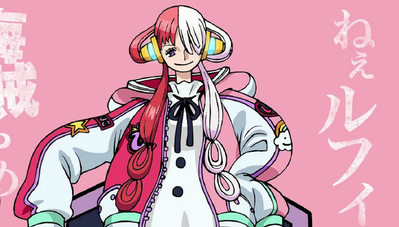

One Piece: Red

üé¨ One Piece Film: Red - A Aventura que Deixa os Fãs Divididos! üé¨
Ah, filmes… aquele território misterioso onde as histórias se desenrolam em uma tela grande, e os personagens ganham vida. Mas, confesso, meu coração bate mais forte quando falamos de jogos. Afinal, onde estão as espadas afiadas, os mundos fantásticos e os desafios épicos? Mas, ok, vamos lá, vou me esforçar para falar sobre o One Piece Film: Red.
!One Piece Film: Red
Uta, a Cantora de Outro Mundo
Em One Piece Film: Red, todos conhecerão Uta, a cantora mais amada do planeta. Sua voz é descrita como “de outro mundo”, o que, convenhamos, é um elogio e tanto. Ela esconde sua verdadeira identidade enquanto canta, e agora, pela primeira vez, vai se revelar ao mundo em um show ao vivo. O local está repleto de fãs animados, piratas, a Marinha e até os Chapéus de Palha liderados pelo nosso querido Luffy. E a grande revelação? Ela é “filha de Shanks”. Sim, o próprio Shanks, o ruivo dos mares. Isso sim é um plot twist!
Flashbacks e Cronologia Inversa
A história de Uta é contada por meio de flashbacks do passado. Uma cronologia inversa que nos faz pensar: “Será que o mangá já usou essa técnica antes?”. Bem, não sou a pessoa mais indicada para responder, mas vamos seguir em frente. O filme também traz muitos spoilers para quem não acompanhou o anime até o arco do Brook. Então, se você ainda não viu, cuidado! As surpresas podem ser muitas.
Musical, Dublagem e Gear 5
Dizem que One Piece Film: Red tem uma pegada de musical. Não, não é como os da Disney, mas tem seu charme. A dublagem está magnífica, especialmente a voz da Bianca como Uta. E, olha só, até o Gear 5 do Luffy dá as caras. Quem diria que um filme poderia ser tão cheio de referências e emoções?
Elden Ring? Não, Obrigado!
Enquanto alguns estão ocupados com dragões e cavaleiros, nós estamos aqui, assistindo a uma cantora misteriosa revelar sua linhagem pirata. Ah, como eu preferiria estar falando de jogos agora! Mas, enfim, One Piece Film: Red está aí, dividindo opiniões, assim como a escolha entre um cogumelo vermelho e um verde no Super Mario. Quem sabe, talvez eu volte a clicar em cookies depois disso.
Então, queridos leitores, preparem-se para uma aventura que mistura m√∫sica, piratas e reviravoltas. E, se algu√©m souber onde está o pr√≥ximo save point, me avise! üåüüé∂ü襂Äç‚ò†Ô∏è